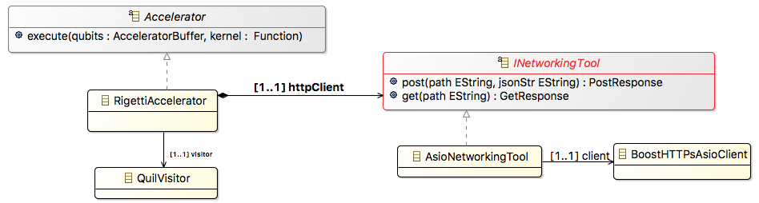

XACC Plugins¶
Rigetti¶
Rigetti Computing, Inc (rigetti.com) is a recently founded startup that is focused on developing quantum computing hardware and software and bring it to market. They are working to build a cloud quantum computing platform for AI and computational chemistry. They currently have a QVM simulation server that can be accessed via a REST API with a private API key. Rigetti has also done great work as of late in providing open source programming tools for interfacing with their QVM - specifically, the PyQuil python framework PyQuil.
Recently, the ORNL QCI (quantum.ornl.gov), the XACC project, and the Software and Applications Team from Rigetti have begun collaborating in an effort to expose the Rigetti QVM server and programming tools to XACC and its user community. This article describes the results of that work - specifically, a new XACC Accelerator implementation that executes quantum kernels on the Rigetti QVM server. For a more hands-on tutorial on how to use XACC and the Rigetti Accelerator, check out Rigetti Tutorial).
RigettiAccelerator¶
The RigettiAccelerator is an implementation or realization of the pluggable XACC Accelerator interface. The RigettAccelerator class architecture diagram is shown in Figure 1. The RigettiAccelerator’s implementation of the Accelerator::execute() method is charged with two primary tasks: (1) the translation of the XACC IR to an equivalent Quil string, and (2) constructing and executing an appropriate HTTPS Post on the Rigetti QVM server. The only remaining thing to do once those two tasks are complete is to processes the resultant response from the server.
Mapping XACC IR to Quil¶
Basically,
at its core, the XACC IR provides a tree-like, in-memory representation and API for a
compiled quantum kernel. The leaves of this tree are XACC Instructions and the nodes
of the tree are XACC Functions, which are composed of further child Instructions. The
XACC Quantum IR implementation provides a number of standard gate Instruction implementations
(Hadamard, CNOT, rotations, etc…) These serve as the leaves of the IR tree. These
instruction implementations know nothing of the Quil intermediate language and it would be tedious
and a poor design decision to to update the entire XACC Quantum IR package (we would have to do the
same for any and all current and future low-level languages). So XACC employs a common
software engineering design pattern to enable this XACC IR to Quil mapping: the
visitor pattern, which provides a mechansim for adding new operations to an
existing object without modifying the design of that object (Visitor Pattern). For each derived gate Instruction, a Visitor class implements a
corresponding `visit` method (`visit(Hadamard& h)`, etc…). All gate instructions have the
ability to accept an incoming Visitor, and upon doing so, invoke the `visit` method that
corresponds to their type, thus giving the Visitor type information for the Gate Instruction.
Therefore, mapping to Quil simply involves walking the IR tree, and telling each Instruction to
accept the visitor:
auto visitor = std::make_shared<QuilVisitor>();
InstructionIterator it(kernel);
while (it.hasNext()) {
// Get the next node in the tree
auto nextInst = it.next();
if (nextInst->isEnabled()) nextInst->accept(visitor);
}
auto quilStr = visitor->getQuilString();
The visitor implementation is known as the QuilVisitor, and its visit methods look like this (Hadamard for example):
void visit(Hadamard& h) {
quilStr += "H " + std::to_string(h.bits()[0]) + "\n";
}
or for a more complicated gate Instruction:
void visit(ConditionalFunction& c) {
auto visitor = std::make_shared<QuilVisitor>();
auto classicalBitIdx = qubitToClassicalBitIndex[c.getConditionalQubit()]; // populated in visit(Measure)
quilStr += "JUMP-UNLESS @" + c.getName() + " [" + std::to_string(classicalBitIdx) + "]\n";
for (auto inst : c.getInstructions()) {
inst->accept(visitor);
}
quilStr += visitor->getQuilString();
quilStr += "LABEL @" + c.getName() + "\n";
}
After walking the IR tree, the Quil representation is produced with a call to getQuilString().
Executing Quil code on Rigetti QVM¶
With the XACC IR mapped to Quil, the RigettiAccelerator is ready to execute on the Rigetti QVM. The main task here is to construct the proper JSON payload string that contains information about the type of the execution, the classical memory address indices, and the Quil instructions string. The types of execution that the QVM allows are multishot, multishot-measure, wavefunction, and expectation. In this work, we have primarily focused on the multishot method. If the execution type is multishot, then we can provide a further JSON key that is an integer that gives the number of executions of the Quil code to run.
IBM¶
D-Wave¶
Scaffold¶
TNQVM¶
Python —— -